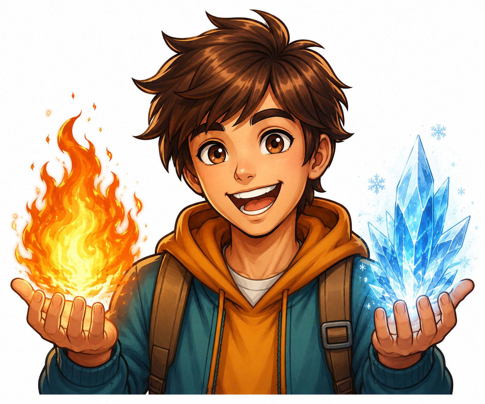

Bem-vindo ao aprendizado de cores quentes e frias. Antes de começar, calibre sua percepção térmica:
São cores que transmitem energia, calor e proximidade. Elas estimulam o olhar e criam sensações vibrantes.
Cores que evocam calma, profundidade e frescor. Elas tendem a parecer mais distantes e relaxantes ao olhar.